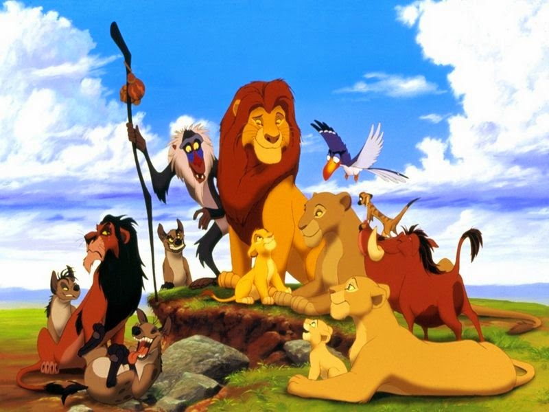

Reparto
El equipo de producción valoró la afinidad entre los actores y los personajes de la película para elegir al reparto de voces. Por ejemplo, seleccionaron a James Earl Jones para el papel de Mufasa porque su voz era «potente y equiparable al rugido de un león». Nathan Lane originalmente había audicionado para el personaje de Zazú, mientras que Ernie Sabella buscaba el papel de una de las hienas. Ambos participaban en aquel entonces en el musical Guys and Dolls. Al reunirse en el estudio de grabación de El rey león, se les pidió que interpretaran a las hienas. Su actuación resultó tan hilarante para los directores, que los eligieron para los roles de Timón y Pumba. Para las hienas tenían pensado contratar al dúo Cheech y Chong, pero solo Cheech Marin estaba disponible así que le ofrecieron el papel de la otra hiena a Whoopi Goldberg.
James Earl Jones, Jeremy Irons y Rowan Atkinson fueron algunos de los actores que prestaron su voz para los personajes del filme. En cuanto a los protagonistas, Matthew Broderick puso voz al Simba adulto en las fases iniciales de producción, y cabe señalar que durante los tres años que tomó el proceso de grabación de voz, grabó sus diálogos en solitario, con la excepción de una ocasión en que estuvo con otro actor en el estudio de grabación. Inclusive no se enteró de que Moira Kelly interpretaba a Nala hasta el estreno de la película. Si bien Jeremy Irons había declinado el papel de Scar al expresar que no se sentía preparado para interpretar a un personaje cómico, después de su actuación en un rol dramático como Claus von Bülow en Reversal of Fortune al final accedió y se integró al reparto. De hecho, los guionistas decidieron incorporar parte de los diálogos de von Bülow en El rey león —como la frase «no tienes ni idea»— mientras que el animador Andreas Deja estudió los tics y rasgos faciales de Irons tanto en Reversal of Fortune como en Damage para el diseño de Scar.
Reparto en ingles
Matthew Broderick como Simba: es el hijo de los reyes Mufasa y Sarabi, y por lo tanto heredero de las Pride Lands. Joseph Williams interpretó las canciones del personaje, cuyo diseño corrió a cargo de Mark Henn y Ruben A. Aquino para el Simba joven y el adulto, respectivamente. Jonathan Taylor Thomas es la voz de Simba joven, mientras que Jason Weaver interpretó las canciones de esta versión del personaje. James Earl Jones como Mufasa: es el padre de Simba y rey de las Pride Lands al principio de la película. El animador Tony Fucile supervisó el diseño del personaje. Jeremy Irons como Scar: es el hermano de Mufasa y tío de Simba, que anhela obtener el trono. Su diseño corrió a cargo de Andreas Deja. Moira Kelly como Nala: es la mejor amiga de Simba y, más tarde, su esposa. Sally Dworsky interpretó sus canciones y los supervisores fueron Aaron Blaise y Anthony DeRosa para las versiones de joven y adulta. Niketa Calame es la voz de la Nala joven y Laura Williams interpretó sus canciones en esta versión del personaje. Nathan Lane como Timón: una suricata macho ensimismada y ocurrente. El supervisor en el proceso de animación fue Michael Surrey. Ernie Sabella como Pumba: un inocente facóquero —aunque en la película se refieren a él como un jabalí— que sufre flatulencias y es el mejor amigo de Timón. Tony Bancroft fue el encargado de animación. Robert Guillaume como Rafiki: un sabio y anciano mandril —aunque también es mencionado como un babuino— que colabora como chamán de las Pride Lands, además de presentar formalmente ante los animales del reino a Simba cuando era un cachorro. La tarea de animación corrió a cargo de James Baxter. Rowan Atkinson como Zazú: un toco que hace de mayordomo real. La animación del personaje recayó en Ellen Woodbury. Madge Sinclair como Sarabi: es la esposa de Mufasa, madre de Simba y líder de la manada de caza. El animador Russ Edmonds supervisó su diseño.
